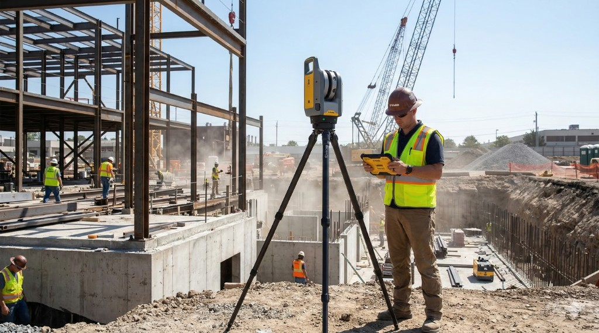

Property Owners
Property Documentation: Maximizing Value Across the Ownership Lifecycle

The construction industry operates under immense pressure from tight schedules and budgets, making efficient and accurate project documentation essential. Traditional documentation methods, relying on manual measurements, 2D drawings, and photographic records, are inefficient, subjective, and result in data that is often weeks old. These limitations lead to critical data gaps, prevent timely corrective action, and contribute to delays, rework, and costly disputes. Light Detection and Ranging (LiDAR) scanning is rapidly becoming a transformative, objective solution to these challenges.
LiDAR uses pulsed lasers to measure distances (Time-of-Flight), capturing millions of precise 3D measurements of a physical space with millimeter-level accuracy. This process generates a dense set of X, Y, and Z coordinates known as a point cloud, which serves as a highly detailed, time-stamped digital record of the as-built condition.
The progress documentation workflow involves:
Integrating LiDAR into construction workflows delivers distinct advantages that enhance project quality and profitability:
LiDAR is applied across various phases of a construction project:
To successfully integrate LiDAR, construction teams must plan for:
LiDAR scanning moves construction progress monitoring beyond subjective analog methods, empowering project teams with objective, verifiable data for quality assurance and efficient management. As the technology becomes more integrated and accessible, its adoption will become indispensable for optimal efficiency and successful project delivery.
Contact us for an Existing Conditions Documentation Quote.
Get in TouchProperty Documentation: Maximizing Value Across the Ownership Lifecycle
Accurate plans and models fast
2D Plans, 3D models and thorough Photo Documentation
Planning for transition, growth and safety with ECD
Efficient, profitable, property operation and management with ECD
ECD: The Blueprint for Flawless Events
Cost Reduction and Risk Mitigation in Construction
An accurate foundation for success in modern landscape architecture
Need progress scans, BIM comparison, or schedule-aligned reporting? Discuss scope with our team.
Get in TouchA comprehensive list of types of buildings, sites, and campuses Ground Truth 3D has scanned, with links to content where available.
Discuss scope, deliverables, and timeline with our team.
Get in TouchStart with a conversation about your documentation needs.
Get in Touch